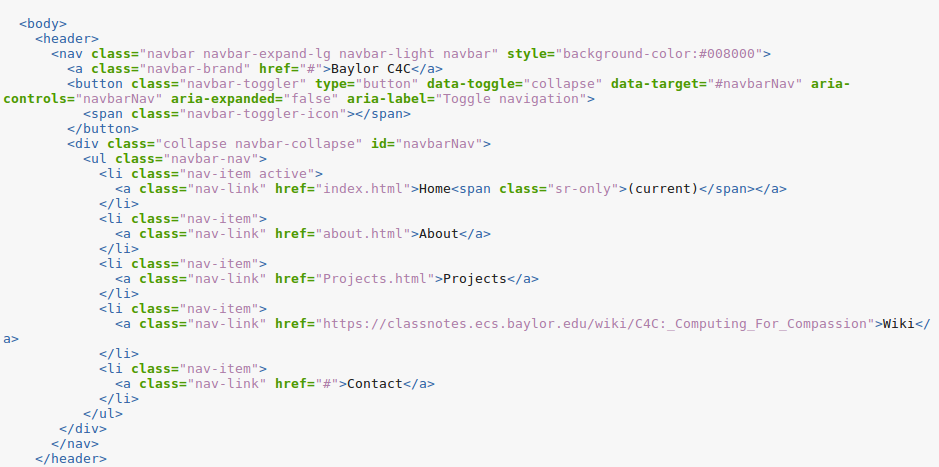
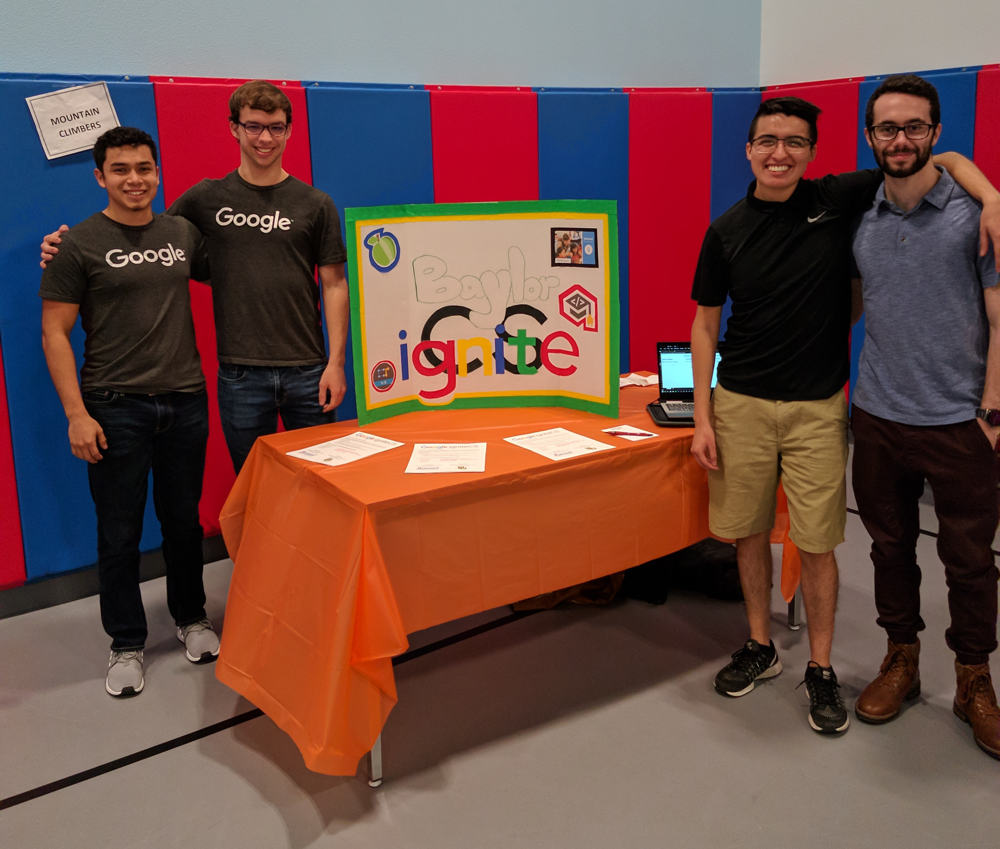
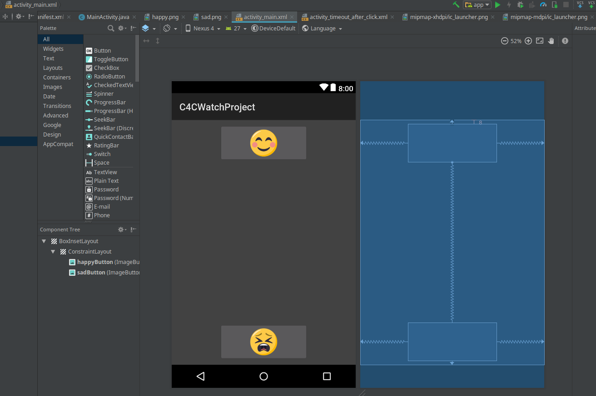

C4C Web DevelopmentA group focused on developing websites. First project will be focused on revamping the C4C website. Project Manager: Sam Shenoi Contact : Samuel_Shenoi1@baylor.edu |
 |
IgniteCSIgniteCS is one of many Google initiatives focused on computer science education. We are volunteering at Harmony Science Academy to spark a passion for computer science within our community! If you’d like to grow in your intrapersonal skills such as teamwork, communication, leadership, this is a great project for you. Members are required to attend 3/5 sessions at Harmony. Special Notes: This group has already started up but if you’re passionate about teaching kids about CS, please contact Mario for more information! Project Manager: Mario Lopez Contact : Mario_Lopez@baylor.edu |
 |
Android Watch DevA group focused on Android App Development. Current project involves creating an Android Watch Application that can upload and project data onto a webpage. The purpose of the app is to assist elementary and middle school aged students with ADD/ADHD focus in the classroom This group is still looking for new members, so feel free to stop buy or message any of the officers to ask about it! Project Manager: Mario Lopez Contact : Mario_Lopez@baylor.edu |
 |